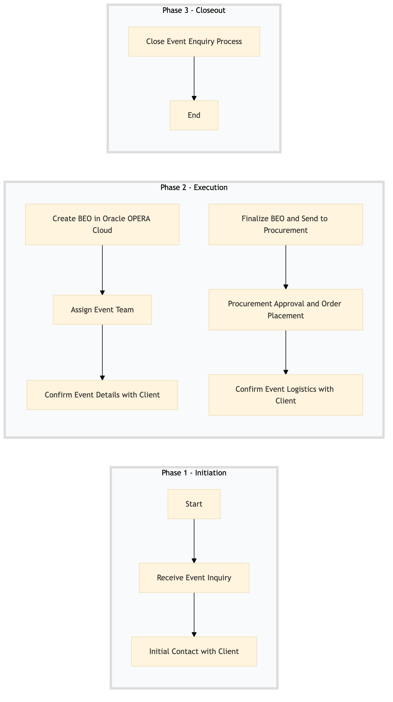

| Role | Steps |
|---|---|
| Front Desk Agent | 1.1 |
| Revenue Manager | 1.2 |
| Banquet Manager | 2.1 2.2 2.3 3.1 3.3 3.4 |
| Procurement Manager | 3.2 |
| Step | Name | Role | System | Input | Output | KPI | Dec? | Exc? | Pain Point / Risk |
|---|---|---|---|---|---|---|---|---|---|
| 1.1 | Receive Event Inquiry | Front Desk Agent | Oracle OPERA Cloud, SynXis CRS | Client inquiry via phone, email, or online booking system | Event inquiry logged in Oracle OPERA Cloud | Less than 3 minutes per inquiry | N | Y | Handling last-minute changes to event details |
| 1.2 | Initial Contact with Client | Revenue Manager | Oracle OPERA Cloud, Marriott Bonvoy CRM | Event inquiry logged in Oracle OPERA Cloud | Client contacted and initial discussion notes recorded | Less than 10 minutes per contact | N | Y | Managing client expectations for event capacity |
| 2.1 | Create BEO in Oracle OPERA Cloud | Banquet Manager | Oracle OPERA Cloud | Client discussion notes and inquiry details | BEO created with event specifics | Less than 15 minutes per BEO creation | N | Y | Ensuring all required fields are accurately filled |
| 2.2 | Assign Event Team | Banquet Manager | Oracle OPERA Cloud, Workday HCM | BEO created with event specifics | Event team assigned and roles defined | Less than 5 minutes per assignment | N | Y | Balancing workload across the event team |
| 2.3 | Confirm Event Details with Client | Banquet Manager | Oracle OPERA Cloud, Marriott Bonvoy CRM | Event team assigned and roles defined | Client confirmation of event details | Less than 10 minutes per confirmation call | Y | Y | Handling client dissatisfaction with proposed changes |
| 3.1 | Finalize BEO and Send to Procurement | Banquet Manager | Oracle OPERA Cloud, Birchstreet Procurement | Client confirmation of event details | Finalized BEO sent for procurement approval | Less than 5 minutes per finalization | N | Y | Ensuring all necessary items are included in the order |
| 3.2 | Procurement Approval and Order Placement | Procurement Manager | Birchstreet Procurement, SAP S/4HANA | Finalized BEO sent for procurement approval | Event supplies ordered and confirmed | Less than 2 hours per order placement | Y | Y | Managing supply chain disruptions |
| 3.3 | Confirm Event Logistics with Client | Banquet Manager | Oracle OPERA Cloud, Marriott Bonvoy CRM | Event supplies ordered and confirmed | Client confirmation of event logistics | Less than 10 minutes per call | Y | Y | Handling client requests for last-minute changes |
| 3.4 | Close Event Enquiry Process | Banquet Manager | Oracle OPERA Cloud, Marriott Bonvoy CRM | Client confirmation of event logistics | Event enquiry process closed and feedback recorded | Less than 5 minutes per closure | N | Y | Ensuring all client feedback is captured |
The process involves receiving an event inquiry from a client and creating a Banquet Event Order (BEO) in Oracle OPERA Cloud PMS.